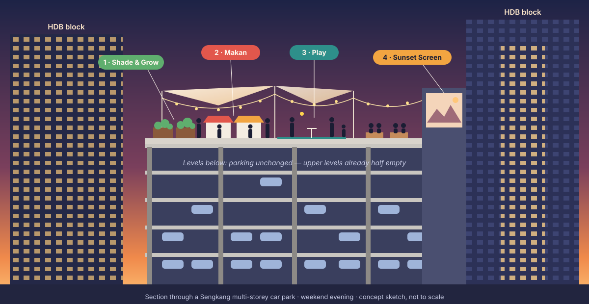
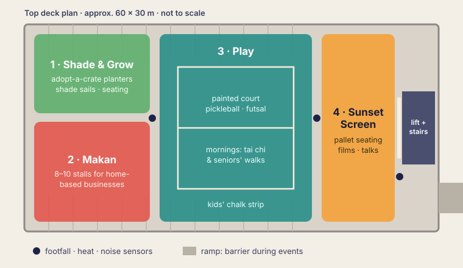

Turning an empty car-park roof in Sengkang into a place where neighbours meet.
Sengkang is a new public-housing town in Singapore. Its car parks were built for more cars than people actually own.
"Level Up" opens the roof on weekend evenings and mornings, when it is cooler. We use cheap things that are easy to remove: shade cloth, wooden seats, plant boxes, lights and paint.
Shade and plant boxes. Each family looks after one and grows herbs or vegetables.
1A small evening food market for local home cooks and small sellers.
2A painted court for ball games and chalk drawing for kids. Tai chi for seniors in the morning.
3Open-air films and football games shown on a wall.
4

Simple sensors count visitors, heat and noise, so the city can decide based on facts.
Singapore already helps with this: a government fund (the Lively Places Fund) pays for ideas from residents, and some car-park roofs are already gardens and farms.
One weekend to test. Residents plan the layout. Sensors start counting.
The full programme, paid for by the fund and the local town council.
If people keep coming: a solar roof for shade and power, fixed courts and gardens, run by residents.
A free guide so other car-park roofs in Singapore can do the same.